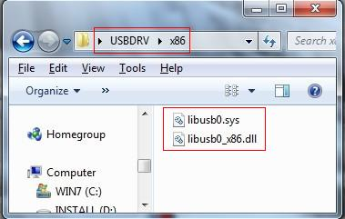

课前准备¶
1 STM32CubeIDE 安装与美化¶
1.1 下载安装¶
STM32CubeIDE是ST公司提供的一款集成开发环境（IDE），用于开发STM32系列的MCU。此IDE基于Eclipse改造，支持Windows，MacOS以及Linux。Lab1-5均需要在此IDE上完成。
- 下载方式： ST公司官网
- 下载需要注册ST公司的账号，可用校园网邮箱免费注册。
- 版本选择：选择最新版本（1.11.2）即可。
- 安装方式：以默认选项安装即可
- 注意事项：IDE安装包中附带ST-Link驱动，若安装程序未自动安装，请手动安装。
- 对于MacOS用户：
- 解压zip文件后，打开dmg文件，首先双击pkg文件安装ST-Link驱动，然后将app文件拖拽到Applications文件夹中。
- 安装驱动时，需要在“系统偏好设置→安全性与隐私”处允许允许这个安装程序。
- 第一次运行STM32CubeIDE时，需要 在Applications文件夹中右键点击STM32CubeIDE.app，选择“打开”，然后在弹出的窗口中点击“打开”。 若直接双击运行，会提示“STM32CubeIDE.app”已损坏，无法打开。这是由于macOS的安全机制导致的，需要手动允许运行一次。
1.2 美化¶
由于 CubeIDE 基于 Eclipse 开发，因此可以使用 Eclipse 的插件来美化 CubeIDE 的界面。
在 Help 栏中选择 Eclipse Marketplace，即可进入插件商店：

推荐使用如下插件：

安装完插件后，可在 Settings 中进行相关主题设置：

2 逻辑分析仪 nanoDLA 教程¶
nanoDLA 是 MuseLab 推出硬件软件以及上位机均开源的逻辑分析仪。支持最高24Mhz采样率，8通道可同时采样。支持Windows/Linux/Mac/Android平台下使用。Lab5需要使用逻辑分析仪来分析DHT11传感器的数据。
提供的 nanoDLA 为 nanoDLA-USB-C ，板上接口为 USB-C 的母口，需要自备一根 USB-C 数据线和上位机连接。
此教程参考了 nanoDLA 的 官方文档 。
2.1 上位机软件下载¶
nanoDLA使用开源的PulseView作为上位机软件。可在其 GitHub 页面 进行下载。
安装过程只需按照默认设置连续点击下一步安装即可。
2.2 驱动安装¶
插入nanoDLA，此时会设备管理器中识别出fxlafw设备，如图所示:

在安装PulseView时，会自动安装Zadig，打开Zadig后选择Options->List All Devices，上方选择对应nanoDLA的fx2lafw（USB ID为 1D50:608C），下方在驱动栏选择WinUSB驱动，点击Install Driver安装驱动即可，稍等片刻，即可成功安装驱动。

成功安装驱动后，设备可被正常识别，如图所示：

对于MacOS，无需使用Zadig安装驱动，可跳过此步
2.3 PulseView 使用¶
将nanoDLA插入PC中，然后打开PulseView，PulseView启动后，会自动搜索并打开fx2lafw设备，如图所示

PulseView使用上比较简单，在下方菜单栏中配置采样数据大小和采样率，点击左上角run按钮，即可开始采样，对于nanoDLA，最高可配置24Mhz的采样率进行工作，8通道同时进行工作


测量时需要选择合理的采样率和采样数据大小，否则会导致采样数据不全，或是采样误差较大。
3 虚拟示波器教程¶
本课程提供了 VDS1022(l) 的虚拟示波器，仅支持在 Windows 平台下使用。
3.1 软件下载¶
可在 owon官网 下载虚拟示波器软件。或直接点击 这里 下载。下载完成软件后按照默认设置安装即可。
3.2 驱动下载¶
首先需要在 owon官网 下载驱动，或直接点击 这里 下载。
接下来将虚拟示波器设备使用USB线和电脑连接，在所有安装操作过程中，请保持设备启动运行良好，并通过USB接口正确连接到PC。请按照如下步骤进行操作：
右键[我的电脑(Computer) ]，一般在桌面上，如果没有，也可以在[开始(Start)]菜单中找到。
在弹出的菜单中，选择[管理(Manage)]，打开计算机管理窗口，如图中的操作，在左侧框中点击 设备管理器，中间框会显示树形的设备集合，点击上方工具栏中的最后一个按钮[扫描硬件更新(Scan for hardware changes)]，如果此时设备运行且连接到了PC，将在中间框刷新得到一个新的未知设备，如图，
右键该未知设备，在弹出的菜单中选择[更新驱动程序(Update Driver Software...)]，
在弹出的更新驱动程序框中，选择[在我的电脑中寻找驱动(Browse my computer for driver software)]，
在接下来的框中，选择驱动文件所在的文件夹路径，如图，然后点击[下一步(Next)]，
注：驱动文件目录即安装目录下的"USBDRV"文件夹（对于Windows 8，驱动文件夹位于USBDRV\USBDRV_win8），其中的内容如下，
或者是这样的"USBDRV"文件夹，其中可以提供需要指定的“.inf”文件，而“.sys” 及 “.dll”文件将在相应的文件夹 “x86”, “ia64” 或 “amd64”中，需要根据不同的CPU类型进行选择，不过一般来说“x86”或 “amd64”就足够了。

好，现在回到驱动安装的对话框中，之前点击[下一步(Next)]后，将转到这里，系统尝试使用该目录下的驱动进行安装，

接下来在安装过程中，
有一些版本(Windows XP x86&x64, Windows Vista x86&x64, Windows 7 x86)将弹出如下图的窗口[Windows安全(Windows Security)]，选择[仍然安装此驱动程序(Install this driver software anyway)]，

另一些版本(Windows 7 x64)将弹出如下图的窗口[Windows安全(Windows Security)]，选择[安装(Install)]，
之后会继续安装，

安装完毕，窗口中的内容为“Windows已经成功更新了您的驱动(Windows has successfully updated your driver software)”，
关闭上面的窗口后，在原先的[计算机管理(Computer Management)]窗口中，将显示如下：
此后，用户就可以正常使用USB设备了，至此安装完毕。
3.3 软件使用¶
软件的界面如下图所示：
软件的详细使用教程见 帮助文档 ，同时也可以参考打开软件时的“新手入门”界面。盒子中的说明书也有简要的教程可供参考。
需要特别注意的有几下几点：
-
表笔旁边的的小鳄鱼夹即为接地夹（如下图所示），每次测量时需要将其和被测电路共地，否则可能会导致测量不准确甚至损坏仪器。
-
通过将表笔帽突出处向下按，可以露出表笔头部的小勾，可以方便的将其钩在被测电路的元件上进行测量。如下图所示：

-
不要使用手直接触碰表笔尖端，以免损坏仪器或者触电。